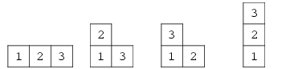

1. 1. Fibonacci Number
0, 1, 1, 2, 3, 5, 8, 13, 21, 34, 55, 89, 144, 233,377, 610 …
Formula:
F[0]=0F[1]=1F[i]=F[i−1]+F[i−2]F[n]=2n√5(1+√5)n−(1−√5)n=[√51(21+√5)n]
2. 2. Lucas Number
1, 3, 4, 7, 11, 18, 29, 47, 76, 123...
Formula:
L[n]=(21+√5)n+(21−√5)n
3. 3. Catalan Number
1, 2, 5, 14, 42, 132, 429, 1430, 4862, 16796, 58786,208012…
Formula:
C[n]=n+1C(2n,n)
Application:
1) 将 n + 2 边形沿弦切割成 n个三角形的不同切割数
2) n + 1个数相乘, 给每两个元素加上括号的不同方法数
3) n 个节点的不同形状的二叉树数(严《数据结构》P.155)
4) 从n * n 方格的左上角移动到右下角不升路径数
4. 4. StirlingNumber(Second Kind)
S(n, m)表示含n个元素的集合划分为m个集合的情况数
或者是n个有标号的球放到m 个无标号的盒子中, 要求无一为空, 其不同的方案数
Formula:
S(n,m)={0S(n−1,m−1)+m∗S(n−1,m)(m=0∣∣n<m)(n>m≥1)S(n,m)=m!1i=0∑m(−1)i∗C(m,i)∗(m−i)n
Special Cases:
S(n,0)=0S(n,1)=1S(n,2)=2n−1−1S(n,3)=61(3n−3∗2n+3)S(n,n−1)=C(n,2)S(n,n)=1
5. 5. BellNumber
n 个元素集合所有的划分数
Formula:
B[n]=i=0∑nS(n,i)
6. 6. Stirling's Approximation
n!=√2πn(en)n
7. 7. Sum of Reciprocal Approximation
EulerGamma = 0.57721566490153286060651209;
i=1∑ni1=ln(n)+EulerGamma;(n→∞)
8. 8. Young Tableau
Young Tableau(杨式图表)是一个矩阵, 它满足条件:
如果格子[i, j]没有元素, 则[i+1, j]也一定没有元素
如果格子[i, j]有元素a[i, j],则[i+1, j]要么没有元素, 要么a[i+1, j] > a[i, j]
Y[n]代表n个数所组成的杨式图表的个数
Formula:
Y[1]=1Y[2]=2Y[n]=Y[n−1]+(n−1)∗Y[n−2];(n>2)
Sample:
n = 3;

- 整数划分
将整数n分成k份, 且每份不能为空, 任意两种分法不能相同
1) 不考虑顺序
for(int p=1; p<=n ;p++)
for(int i=p; i<=n ;i++)
for(int j=k; j>=1 ;j--)
dp[i][j] += dp[i-p][j-1];
cout<< dp[n][k] <<endl;
2) 考虑顺序
dp[i][j] = dp[i-k][j-1]; (k=1..i)
3) 若分解出来的每个数均有一个上限m
dp[i][j] = dp[i-k][ j-1];(k=1..m)
9. 10. 错排公式
d[1]=0d[2]=1d[n]=(n−1)∗(d[n−1]+d[n−2])